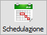
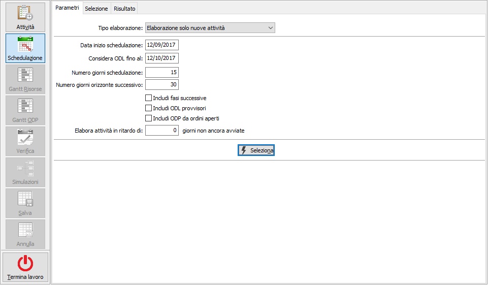
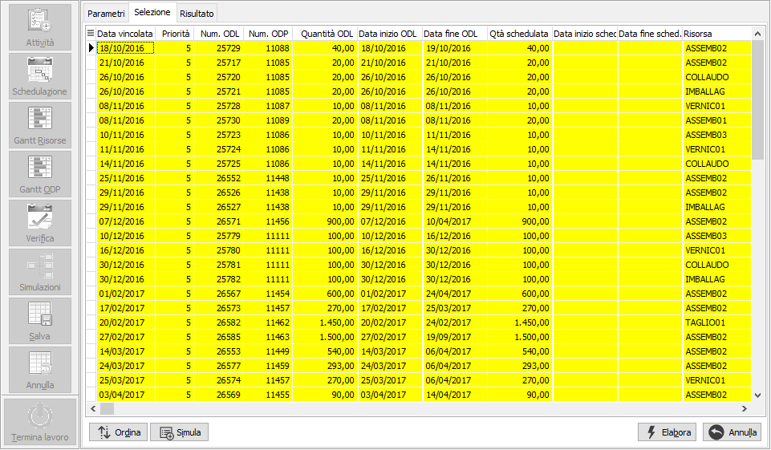
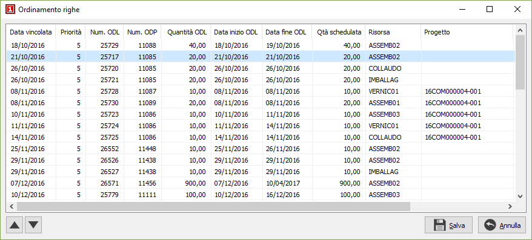
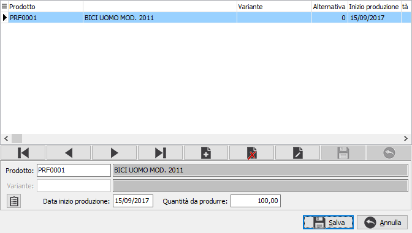
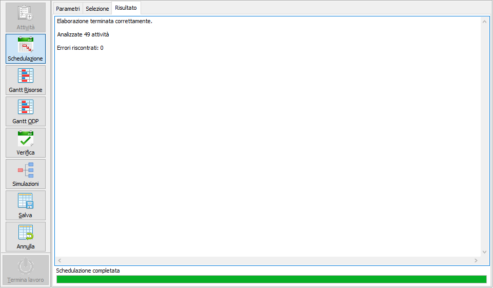

Schedulazione

La fase di schedulazione ha lo scopo di allocare le attività sulle risorse; vengono analizzate le attività nella sequenza definita assegnando la risorsa secondo l’indicazione stabilita a livello di ciclo:Risorsa preferenziale: vengono utilizzate le risorse associate al gruppo fasi appartenenti all’unità produttiva; se è presente un set di risorse le risorse utilizzate sono quelle presenti nel set.
Risorsa obbligatoria: se sono presenti più unità produttive viene utilizzato il set di risorse abbinando una risorsa per ciascuna unità produttiva, altrimenti viene utilizzata la risorsa indicata sul ciclo.
I vincoli considerati nella schedulazione sono:
Vincoli di fase (la sequenza delle fasi deve essere rispettata)
Vincoli di calendario (non è possibile allocare oltre il tempo a disposizione della risorsa).
Vengono proposti i parametri di elaborazione in base alle opzioni presenti sull'unità produttiva. La schedulazione viene effettuata al più presto a partire dalla data di inizio schedulazione (viene proposta la data di sistema); vengono trattate le attività fino ad una determinata data di inizio lavorazione (derivante dagli ODL); si può comunque modificare la durata dell’orizzonte di schedulazione e dell’orizzonte successivo.

Sono previsti 4 tipi di elaborazione:
Elaborazione per manutenzione: vengono elaborate tutte le attività già schedulate per presentarle all’interno dei Gantt.
Elaborazione nuove attività: le attività già presenti nell’orizzonte di schedulazione vengono lette così come sono, le attività non ancora schedulate e selezionate vanno ad accodarsi alla situazione esistente.
Rielaborazione con vincoli: le attività vincolate già presenti nell’orizzonte di schedulazione vengono lette così come sono, le attività già schedulate ma non vincolate e le attività non ancora schedulate e selezionate vengono rielaborate.
Rielaborazione totale: vengono rielaborate tutte le attività già schedulate e le attività non ancora schedulate selezionate.
Tramite la casella "Includi fasi successive" consente di trattare un ODP nella sua interezza; le attività che sono oltre l’orizzonte di schedulazione vengono comunque presentate nell’orizzonte successivo; le fasi esterne sono considerate solo ai fini della visualizzazione nel Gantt ODP e sono trattate a capacità infinita (viene considerato il lead time di fase in giorni).
Tramite la casella "Includi ODL provvisori" è possibile trattare, anche gli ODL provvisori; se inclusi e schedulati, al momento del salvataggio, l’ODP e gli ODL saranno resi definitivi (vengono pianificati).
Se attiva la gestione degli ordini di previsione sarà presente anche la casella "Includi ordini aperti" sarà possibile includere anche gli ODL derivanti da questi ordini. Se al termine dell'elaborazione saranno presenti attività derivanti da ordini di previsione nell'orizzonte di schedulazione la schedulazione non potrà essere salvata.
è possibile ripianificare automaticamente le attività che non sono avviate (per le quali quindi non è stato registrato nessun versamento) e la cui data di inizio è ormai nel passato; la selezione di tali attività è basata sul numero di giorni indicati nel parametro “Elabora attività in ritardo di … giorni non ancora avviate”; tali attività vengono selezionate automaticamente e presentate in cima nella lista delle attività da schedulare.
Ad eccezione del tipo elaborazione per manutenzione, premendo il pulsante Seleziona vengono elaborate le attività ed è prevista una fase interattiva.

In questa fase è possibile eseguire una ulteriore selezione interattiva, tramite il doppio clic del mouse oppure utilizzando il menù contestuale al tasto destro del mouse.
 Tramite il pulsante Ordina è possibile modificare l'ordinamento delle attività spostandole singolarmente tramite gli appositi tasti di scorrimento oppure selezionando e trascinando le singole righe. La pressione sul pulsante Salva determina la modifica effettiva dell'ordinamento.
|
 Tramite il pulsante Simula è possibile aggiungere alla schedulazione prodotti (e relative quantità) da inserire nella schedulazione; è possibile inserire qualsiasi prodotto, o prodotto variante, associato ad una scheda tecnica; se gestite le alternative sarà presente anche il pulsante che ne permette la selezione; è richiesta inoltre la data di inizio produzione e la quantità da produrre; sarà utilizzato il ciclo di produzione per determinare le fasi da schedulare.In presenza di dati simulati la schedulazione non potrà essere salvata.
|
Terminata questa fase tramite il pulsante Elabora, se presente, altrimenti direttamente dalla pagina dei parametri, viene effettuata l'elaborazione della schedulazione che rielabora le attività in memoria, attivando gli altri pulsanti, sulla sinistra, e consentendo le successive operazioni di manutenzione, attraverso il gantt risorse, visualizzazione, attraverso il Gantt ODP e verifica. Nella pagina risultati vengono visualizzate le informazioni sull'elaborazione compresi eventuali messaggi di errore.
